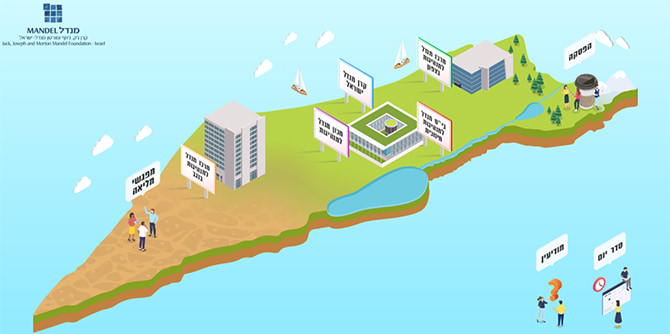
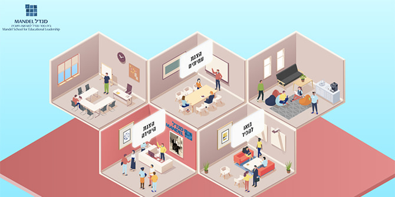
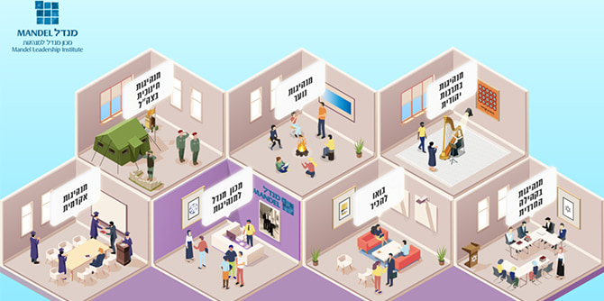
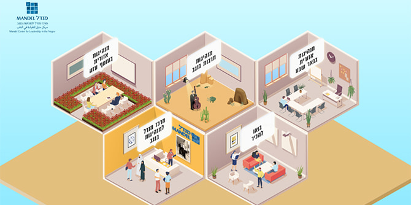
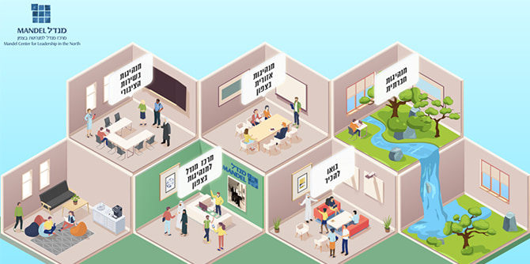
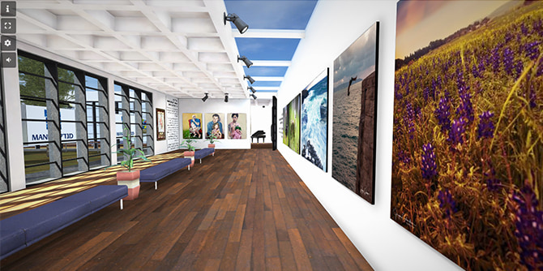

"מטרת היום הזה היא להכיר לכם את הקרן ואת הפעילויות הרבות שהיא מקיימת, כדי שתבינו שאתם חלק ממשהו גדול – שעושה שינוי במדינת ישראל, לטובת החברה ולטובת כלל האזרחים", אמר מנכ"ל קרן מנדל-ישראל משה ויגדור בפתיחת היום.
ליום זה הוזמנו העמיתים, חברי הצוות והסגל מכל התוכניות, וכן עובדי המטה של הקרן, ובשל מגבלות הקורונה הוא התקיים במרחב וירטואלי ייחודי שהוקם לצורך כך והכיל גם אפשרויות אינטראקטיביות לתקשורת ישירה בין כל המשתתפים.

ואכן, אירוע ייחודי זה, שנערך בפעם הראשונה בקרן מנדל-ישראל, אפשר מפגש של כלל העמיתות והעמיתים בתוכניות המנהיגות ותרם רבות להגברת תחושת השייכות לקרן, ליצירת חיבורים בין העמיתים, וכן לחשיפה ולהיכרות עם הפעילויות והנושאים שבהן עוסקות התוכניות – מתוך שאיפה ללמידה מעמיקה ומשמעותית.
במתכונת של מושבים מקבילים הציגו היחידות ותוכניות המנהיגות של הקרן – באמצעות עמיתות, עמיתים, חברי סגל ומנהלים – את הנושאים והאתגרים המונחים על שולחנן בימים אלו, מתוך החיבור לקהילה ולמרחבי ההשפעה שלהן.
בית ספר מנדל למנהיגות חינוכית הציג את לימודי המינהל והמדיניות, את מטרת של לימודי הרוח בבית הספר ואת סדנאות העמיתים כ-signature pedagogy של למידה מנדלית. כמה מעמיתי בית הספר הציגו את תחומי העניין שלהם: מוחמד קונדס, שחקן ומוזיקאי, עמית מחזור כ"ח, שוחח על "תרבות כמצפן למנהיגות", ואשת הקולנוע הלן יאנובסקי, עמיתת מחזור כ"ט, דיברה על "״מצלמה ככלי חינוכי – בני/ות נוער מתעדים״.

מכון מנדל למנהיגות הציג את תוכניותיו המגוונות, המיועדות לאוכלוסיות שונות בחברה הישראלית: ד"ר נעמי פרל, ד"ר אמירה ארליך והרב מנחם בומבך הציגו את תוכניות מנדל לפיתוח מנהיגות בקהילה החרדית; ליאור פרי הציג את תוכנית מנדל למנהיגות חינוכית בצה"ל; דני רוזנר, מנהל תוכנית מנדל למנהיגות נוער, הציג את פעילותו של החינוך הבלתי פורמלי בתקופת הקורונה; מישאל ציון, ד"ר ג'רמי פוגל, ד"ר רות קלדרון ומלכה פיוטרקובסקי מתוכנית מנדל למנהיגות בתרבות יהודית דנו במפלג ובמחבר בתרבות יהודית ישראלית; ועידו ברקן וד"ר ניר מיכאלי מתוכנית מנדל למנהיגות אקדמית דנו במתחים בהכשרת מורים בישראל.

ד"ר עדי ניר-שגיא, מנהלת מרכז מנדל למנהיגות בנגב, דנה ב"אדם משנה מקום משנה אדם: מנהיגות מאילת ועד רהט"; ישראל שורק, חבר סגל המרכז, שוחח עם עמיתות המרכז על "בין שינוי המציאות לשינוי במציאות", ד"ר רותם ברסלר גונן וד"ר גילי זיוון הציגו את תוכנית מנדל למנהיגות אזורית בעוטף עזה, ופרופ' דנה אריאלי וד"ר יצחק (קיקי) אהרונוביץ הציגו את תוכנית מנדל למנהיגות תרבות בנגב.

מיקי נבו, מנהל מרכז מנדל למנהיגות בצפון, שוחח על "מנהיגות בחברה מגוונת: מהם התנאים, הפעולות והמאפיינים הנדרשים לכך?"; ספא גארב וד"ר יואב קני הציגו את תוכנית מנדל למנהיגות חברתית; דפי בירן זינגר ורויטל יהלום תיארו את הפרויקט האישי כמדגים את הייעוד והייחוד של התוכנית האזורית בצפון, ונגה גיל בשיא, מנהלת תוכנית מנדל למנהיגות בשירות הציבורי, שאלה
"האם יש דבר כזה בכלל מנהיגות בשירות הציבורי".

בהפסקות שבין המושבים יכלו המשתתפים ליהנות מעיון באסופת שירים פרי עטם של עמיתי תוכניות הקרן, לעשות שימוש בפלטפורמה מקוונת ליצירת חיבורים בין עמיתים מכל התוכניות על בסיס תחומי עניין משותפים (איכות הסביבה, התנדבות וקהילה, בריאות הציבור, נוער בסיכון, אנשים עם מוגבלות ועוד), ולשוטט להנאתם בגלריה מקוונת של יצירות אמנות של עמיתי התוכניות.

אחד מרגעי השיא של היום נערכה שיחה מיוחדת בין יעל לאוטמן-אופיר, יועצת מלווה למשאבי אנוש בקרן מנדל-ישראל, לפרופסור יהודה ריינהרץ, נשיא קרן ג'ק, ג'וזף ומורטון מנדל. בשיחה סיפר פרופ' ריינהרץ על מורטון מנדל ז"ל מזווית ראייה אישית של שותף לדרך ותלמיד, סיפר על פגישתם הראשונה, על יחסיהם הקרובים לאורך השנים ועל שיחתם האחרונה – סמוך מאוד לפטירתו של מורט. בתום השיחה השיב פרופסור ריינהרץ על שאלות העמיתים.
בשאלון המשוב שמילאו, הביעו המשתתפים שביעות רצון רבה מהיום המשותף ודיווחו שהוא אפשר להם להכיר טוב יותר את תחומי הפעילות והעשייה של היחידות והתוכניות השונות של הקרן, להיחשף לדילמות ולאתגרים שהיחידות והתוכניות מתמודדות עמם, ובעיקר - הגדיל את תחושת השייכות שלהם לקרן ואת ההרגשה שכל אחד מהם הוא "חלק ממשהו גדול".
{kind=link}
{kind=link}
{kind=link}
{kind=link}
{kind=link}
{kind=link}
{kind=link}